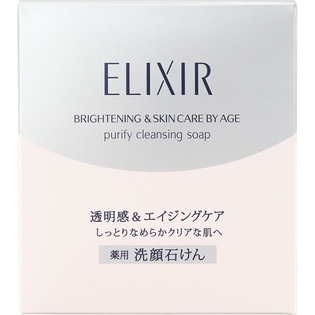

返回列表
产品名称：エリクシール ホワイト クレンジングソープ

資生堂 エリクシール ホワイト クレンジングソープ －（医薬部外品）
メーカー 資生堂
JANコード 4901872646524
商品の特徴
しっとりなめらかクリアな肌へ
薬用です。
- 成分・分量
- 【成分】
グリチルリチン酸ジカリウム※、水溶性コラーゲン（Ｆ）、ハチミツ、脂肪酸石けん、１、３－ブチレングリコール、２－アルキル－Ｎ－カルボキシメチル－Ｎ－ヒドロキシエチルイミダゾリニウムベタイン、４－ｔｅｒｔ－ブチル－４’－メトキシジベンゾイルメタン、Ｎ－メチルタウリンナトリウム液、エデト酸三ナトリウム、ジブチルヒドロキシトルエン、ソルビット液、ドデカン－１、２－ジオール酢酸エーテルナトリウム液、パラメトキシケイ皮酸２－エチルヘキシル、ヒドロキシエタンジホスホン酸四ナトリウム液、ピロ亜硫酸ナトリウム、ポリオキシエチレン（１４）ポリオキシプロピレン（７）ジメチルエーテル、ポリオキシエチレン硬化ヒマシ油、雲母チタン、塩化ナトリウム、香料、高重合ポリエチレングリコール、精製水、濃グリセリン、白糖、黄色４号
※は「有効成分」無表示は「その他の成分」
- 用法及び用量
- 【使用方法】
手のひらで少量の水かぬるま湯を加えながらよく泡立て、顔のすみずみまでていねいに洗う。
その後十分に洗い流します。
※ケース内の中枠は石けんトレーとしてお使いいただけます。